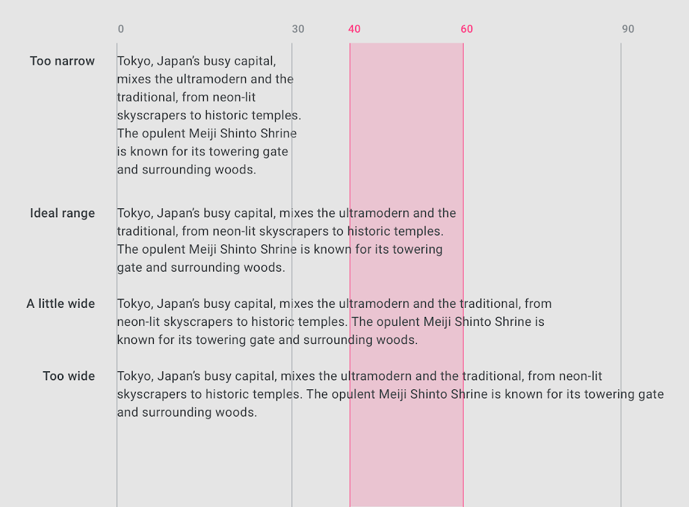
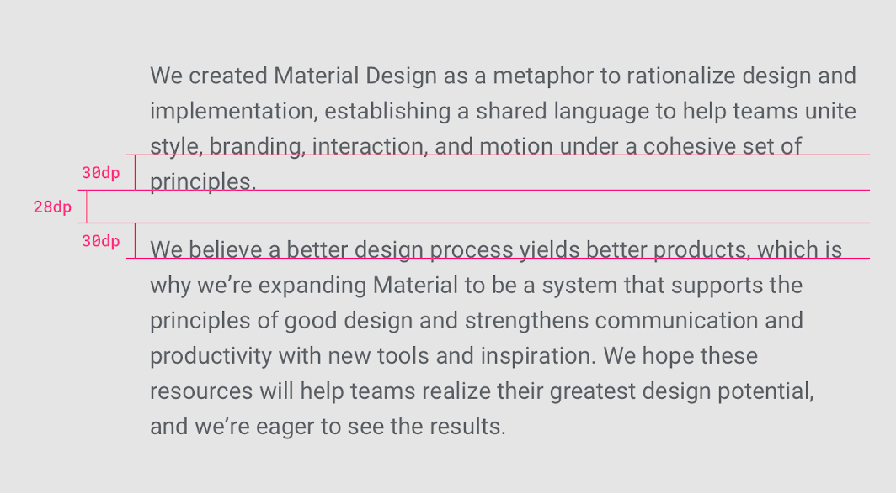
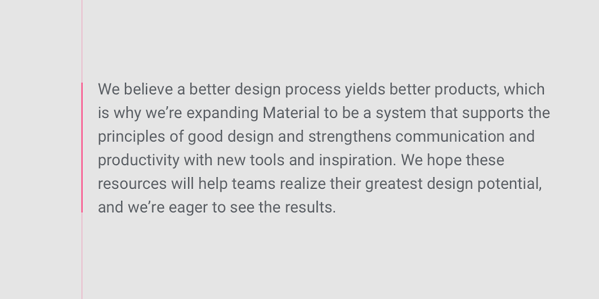
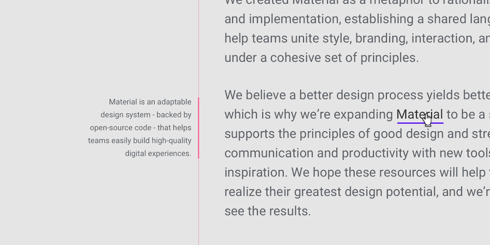

While legibility is determined by the characters in a typeface, readability refers to how easy it is to read words or blocks of text, which is affected by the style of a typeface.
Letter-spacing
Letter-spacing, also called tracking, refers to the uniform adjustment of the space between letters in a piece of text.
Larger type sizes, such as headlines, use tighter letter-spacing to improve readability and reduce space between letters.
Tighter letter-spacing
Line length
Line lengths for body text are usually between 40 to 60 characters. In areas with wider line lengths, such as desktop, longer lines that contain up to 120 characters will need an increased line height from 20sp to 24sp.

The ideal line length is 40-60 characters per line for English body text.
Paragraph spacing

Type size 20sp, line-height 30dp, paragraph spacing 28dp
Type Alignment
Type alignment controls how text aligns in the space it appears. There are three type alignments:
Left-aligned: when text is aligned to the left margin
Right-aligned: when text is aligned to the right margin
Centered: when text is aligned to the center of the area it is set in
Right-aligned

Left-aligned text applied to body copy
Left-align

Right-aligned text applied to a side note
Centered
Centered text is best used to distinguish short typographic elements within a layout (such as pull quotes), and is not recommended for long copy.